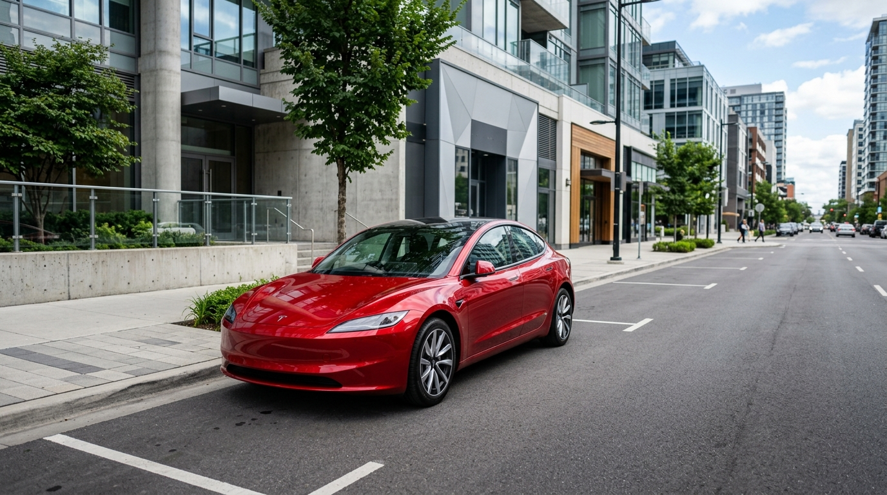
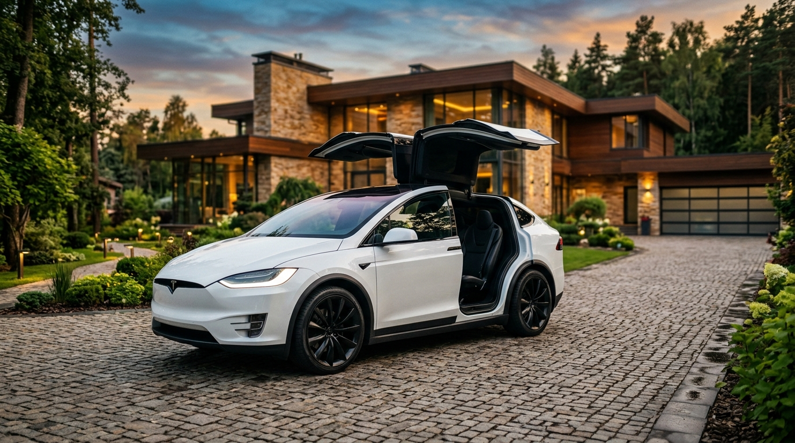
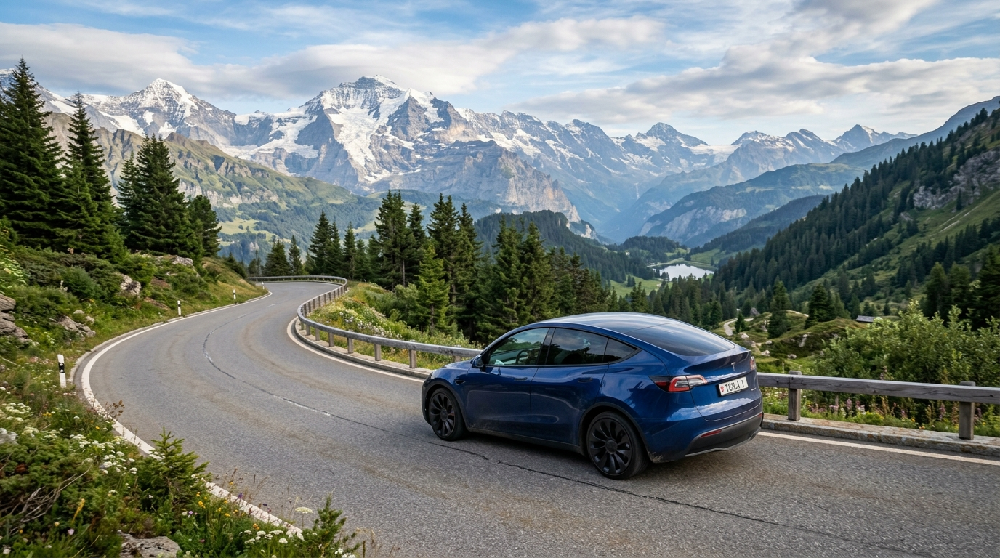
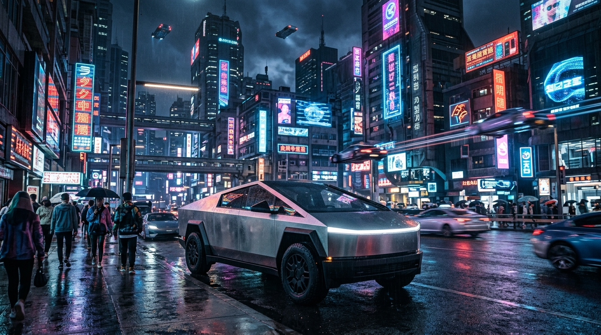

自 2008 年推出第一款 Roadster 以來，Tesla（特斯拉）徹底改變了全球汽車產業的遊戲規則。它不僅是一家車廠，更是一家軟體與能源公司。透過強大的軟硬體整合能力、OTA (Over-the-Air) 遠端更新，以及獨步全球的 Supercharger 超級充電網路，Tesla 成功將「電動車」與「高科技」畫上等號。
本文將以硬核工程師的視角，為你詳細梳理 Tesla 目前的核心車系矩陣（S3XY 家族、Cybertruck），以及其背後的關鍵技術。
1. 核心車系陣容：S3XY 家族
Elon Musk 最初的產品命名戰略是拼出「SEXY」，但由於 "E" 的商標被 Ford 註冊，因此改為數字 "3"，形成了如今的 S3XY 陣容。
Model S：旗艦純電轎車 (Sedan)

- 定位： Tesla 的第一款量產四門轎車，確立了現代 Tesla 的品牌地位。
- 特色： 主打極致性能與豪華體驗。配備 Yoke 方向盤（或傳統方向盤選項）與後座娛樂螢幕。
- 硬核指標 (Plaid 版)： 搭載三馬達全輪驅動，擁有超過 1,000 匹馬力，0-100 km/h 加速僅需 2.1 秒，是地表加速最快的量產車之一。其風阻係數 (Cd) 僅 0.208。
Model 3：平價純電房車 (Compact Sedan)

- 定位： 肩負「普及電動車」使命的大眾市場車款，也是讓 Tesla 轉虧為盈的關鍵。
- 特色： 極簡內裝設計，取消傳統儀表板，所有資訊整合於 15.4 吋中控螢幕。近年推出了代號 "Highland" 的改款版本，進一步取消了實體撥桿（方向燈、排檔皆改為方向盤按鈕與螢幕滑動），並大幅提升了車室隔音與懸吊舒適度。
- 硬核指標： 高能效比，長續航版本 (Long Range) 可達 600 公里以上續航，Performance 版則兼具賽道等級的操控與加速。
Model X：旗艦純電休旅 (SUV)

- 定位： 基於 Model S 底盤開發的全尺寸豪華休旅車，最多可容納 7 人乘坐。
- 特色： 最具標誌性的是其 「鷹翼門 (Falcon Wing Doors)」，內建超音波感測器，能在狹窄空間內偵測障礙物並自動調整開啟角度。此外，配備全景擋風玻璃，視野極佳。
- 硬核指標： 同樣提供三馬達的 Plaid 版本，是一台擁有超跑加速能力的休旅巨獸，且具備強大的拖曳能力。
Model Y：中型純電跨界休旅 (Crossover SUV)

- 定位： 基於 Model 3 平台開發的休旅車，也是目前 全球最暢銷的車款（不分燃油或純電）。
- 特色： 結合了 Model 3 的操控性與 Model X 的空間實用性。採用一體化壓鑄技術 (Giga Press)，大幅減少車身零件數量，提升結構強度並降低生產成本。
- 硬核指標： 完美的空間與能耗平衡，標配全景玻璃車頂與電動尾門，是目前 CP 值最高的家庭純電休旅選擇。
2. 顛覆傳統的重型武器：Cybertruck

- 定位： 純電皮卡 (Pickup Truck)，主攻北美市場。
- 特色： 打破了過去百年來皮卡的設計框架。車身採用 Ultra-Hard 30X 冷軋不鏽鋼 製成，無需烤漆，具備防彈能力；車窗為 Tesla 裝甲玻璃。造型充滿賽博龐克 (Cyberpunk) 風格的銳利幾何線條。
- 硬核指標：
- 導入 48V 低壓架構（傳統車輛為 12V），大幅縮減車內線束重量。
- 採用 線控轉向 (Steer-by-Wire) 技術，方向盤與車輪之間沒有機械連接，根據車速動態調整轉向比。
- Cyberbeast (野獸版) 擁有 845 匹馬力，0-100 km/h 加速僅 2.7 秒，甚至能拖著一輛保時捷 911 跑贏另一輛保時捷 911。
3. 其他商業與未來車系
- Tesla Semi： 純電 Class 8 重型卡車，承諾在滿載 80,000 磅的情況下能達到 500 英里（約 800 公里）的續航，目前已交付給百事可樂 (PepsiCo) 等企業進行商業營運。
- Next-Gen Roadster： 第二代純電跑車，號稱 0-60 mph 加速低於 1 秒（若選配 SpaceX 冷氣體推進器），目前仍在開發階段。
- Robotaxi / Cybercab： 專為完全自動駕駛 (FSD) 設計的無方向盤、無踏板計程車，是 Tesla 轉型為自駕服務網路公司的核心產品。
4. Tesla 的三大硬核技術護城河
- FSD (Full Self-Driving) 完全自動駕駛：
Tesla 堅持採用「純視覺 (Vision-only)」方案，拔除了雷達與超音波感測器，僅靠車身鏡頭捕捉影像，並透過神經網路 (Neural Network) 進行端到端 (End-to-End) 的機器學習。其 Dojo 超級電腦不斷處理全球百萬輛 Tesla 回傳的真實駕駛數據，使 FSD 的能力呈指數級進化。 - OTA (Over-the-Air) 軟體更新：
傳統車廠的車子買來就定型了，但 Tesla 像是一台巨大的智慧型手機。透過 OTA，Tesla 能遠端提升馬達輸出、改善煞車邏輯、增加新 UI 介面，甚至推出全新的自動駕駛功能，讓車子「越開越新」。 - 超級充電網路 (Supercharger Network)：
這是 Tesla 早期最成功的一步棋。其 V3/V4 超充站遍布全球，隨插即充 (Plug & Charge) 體驗無縫且穩定。如今，Tesla 的 NACS (北美充電標準) 甚至統一了北美電動車市場，迫使各大傳統車廠低頭採用。
結語
Tesla 已經不是一家單純製造硬體的車廠。它利用軟體定義汽車 (Software-Defined Vehicle)，將 AI、自動化生產與能源網格無縫結合。如果你是一個崇尚科技與效率的工程師，Tesla 的設計邏輯與底層架構，絕對是目前汽車工業中最值得研究的標竿。